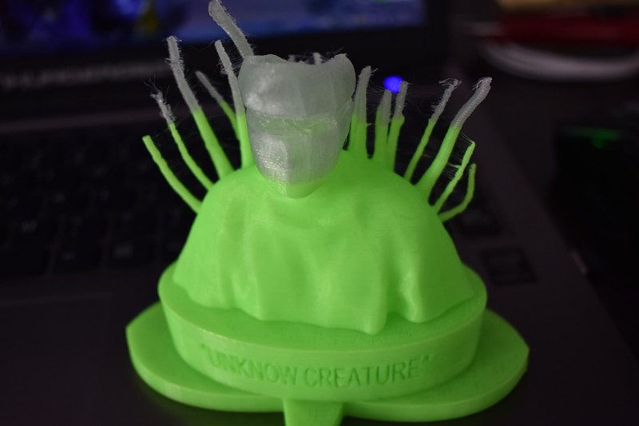

3D scanning requires hardware Kenect And softwares SKANECT and MESHMIXER
scanning is eazy to get in, we sacn mike as an example
we need the object turned around
Then we have the model that can be modified in meshmixer :)
Afterwhile we all scaned ourselves, i found the meshmixer have some magic option.
So dealing with the overhang ,we 3Dprint our scan portal.

Previous